Laboratorio 6: Balanceo y autoscaling
1. Introducción y objetivo
En este laboratorio se abordará la configuración de balanceo de carga y escalado automático en AWS. Se aprenderá a distribuir el tráfico entre múltiples instancias y a ajustar automáticamente la capacidad según la demanda.
Se seguirá un procedimiento paso a paso para configurar el balanceo de carga y el escalado automático en AWS, incluyendo la creación de instancias, la configuración de un grupo de autoescalado y la implementación de un balanceador de carga.
2. Procedimiento
En esta sección se detallará el procedimiento para configurar el balanceo de carga y el escalado automático en AWS. Se incluirán los pasos necesarios para crear instancias, configurar un grupo de autoescalado y establecer un balanceador de carga.
2.1 Creación de AMI para el autoescalado
Para habilitar el autoescalado, primero se debe crear una Amazon Machine Image (AMI) de la instancia que se desea replicar. Esta AMI servirá como plantilla para lanzar nuevas instancias automáticamente cuando sea necesario.
[CS01] Captura de la creación de la AMI
Mediante la consola de administración de AWS accedemos a EC2, desde donde crearemos la imagen de la instancia indicada por el laboratorio.
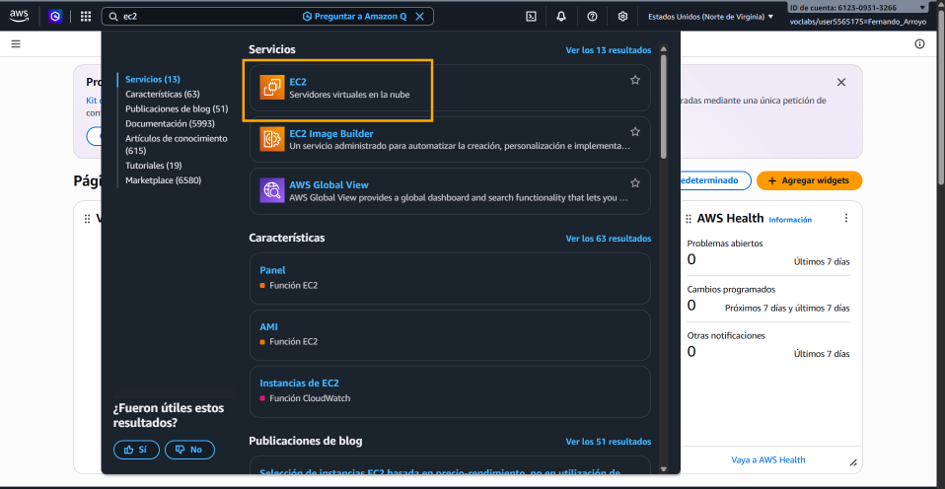
Accedemos al apartado de instancias y seleccionamos la instancia indicada por el laboratorio, en este caso Web Server 1.
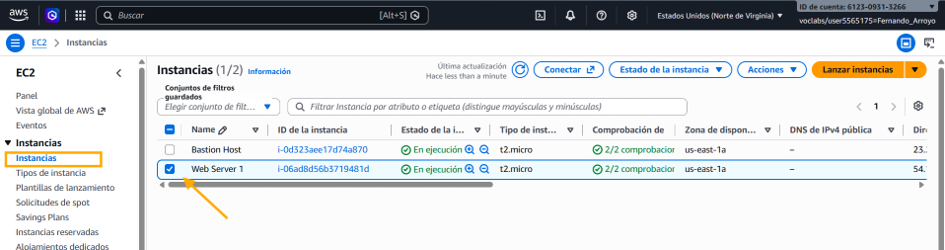
Con la instancia seleccionada, desde el botón “Acciones” accedemos a crear la imagen de la instancia. Donde definimos los parámetros solicitados por el laboratorio.
Asignamos el nombre: WebServerAMI
descripción de la imagen: Lab AMI for Web Server
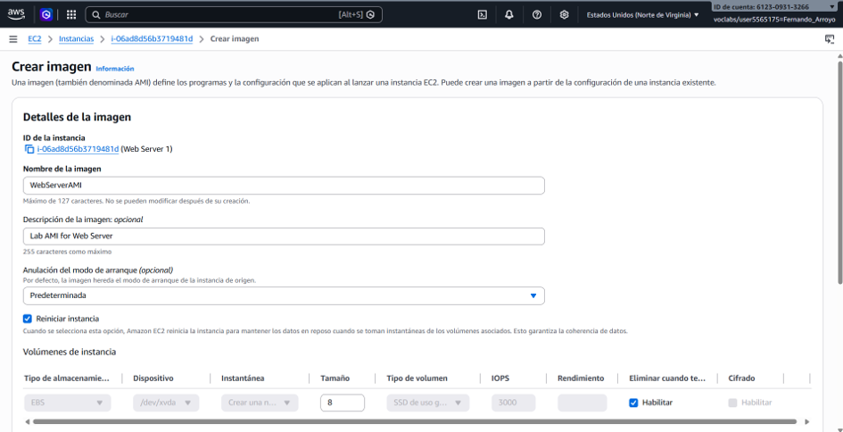
Esperamos a que la creación de la AMI se complete, lo cual puede tardar unos minutos. Una vez finalizada, la nueva imagen estará disponible en el apartado de AMIs de EC2. Desde el menú de Amazon Machine Images (AMI) comprobamos que la imagen se ha creado correctamente.
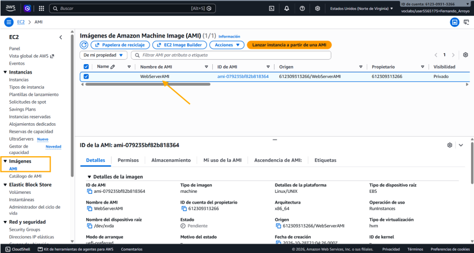
Con esto hemos completado la creación de la AMI que servirá como plantilla para el autoescalado.
Esta AMI ahora puede ser utilizada para configurar un grupo de autoescalado, asegurando que nuevas instancias se lancen automáticamente según la demanda utilizando esta AMI. Esto permite que la infraestructura se adapte dinámicamente a las necesidades del tráfico, mejorando la disponibilidad y eficiencia de los recursos.
2.2 Comprobación de la VPC generada
En esta sección verificaremos que la VPC generada por el laboratorio se ha creado correctamente y que todos los componentes asociados, como subredes, gateways y tablas de enrutamiento, están configurados según lo esperado.
[CS02] Captura de la infraestructura VPC creada
Accedemos al servicio VPC desde la consola de administración y seleccionamos lab VPC para visualizar la infraestructura desde el apartado “mapa de recursos”.
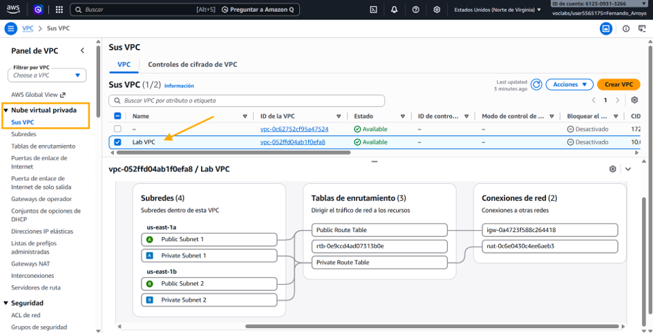
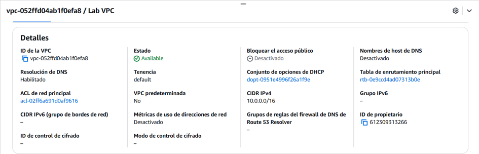
2.3 Creación del balanceador de carga
En esta sección configuraremos un balanceador de carga para distribuir el tráfico entre las instancias del grupo de autoescalado. Esto asegura que las solicitudes de los usuarios se manejen de manera eficiente y que la carga se distribuya equitativamente.
[CS03] Captura del ELB creado
2.3.1 Creación del grupo de destino
El grupo de destino se utilizará para asociar las instancias que recibirán el tráfico del balanceador de carga. Esto permite que el balanceador de carga distribuya las solicitudes de manera eficiente entre las instancias disponibles.
A continuación, procedemos a crear el ELB solicitado en el laboratorio.
El primer paso será crear un grupo de destino. Para ello dentro del servicio EC2 en el menú de la izquierda accedemos a grupo de destino. Una vez dentro, pulsaremos al botón “Crear un grupo de destino”.
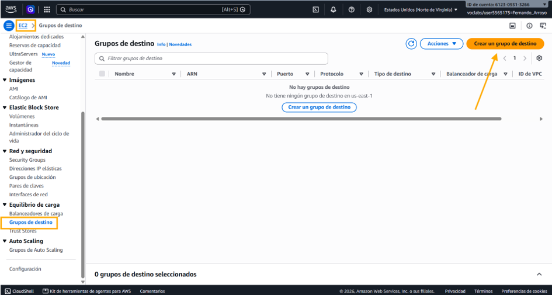
Siguiendo los pasos indicados en el laboratorio, establecemos los parámetros solicitados.
tipo de destino: Instancias
Nombre del grupo objetivo: LabGroup
Seleccione Lab VPC en el menú desplegable VPC.
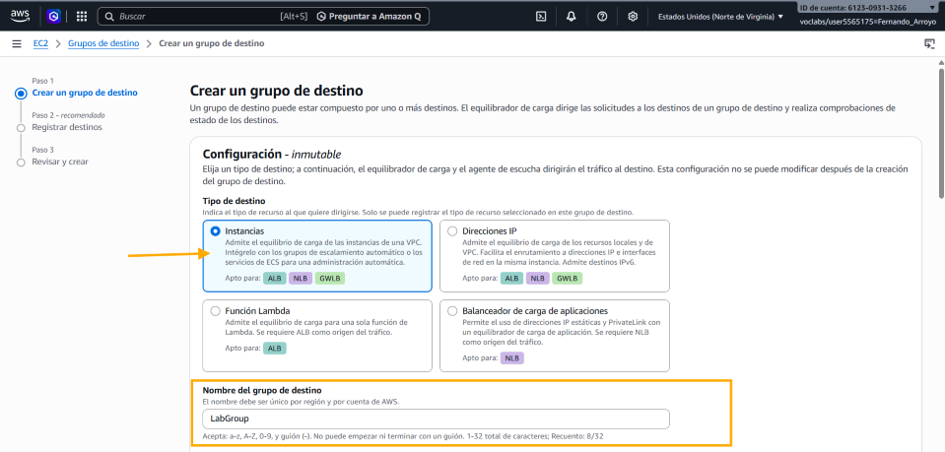
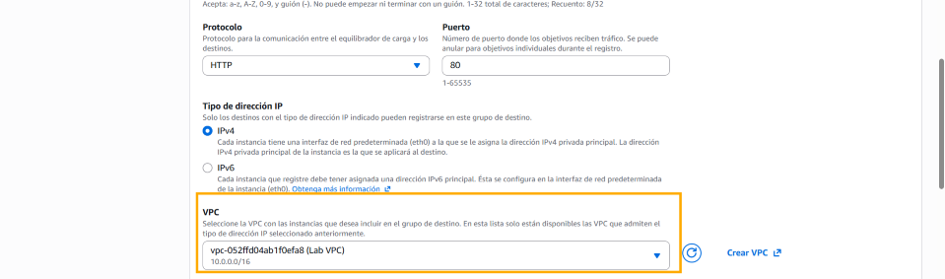
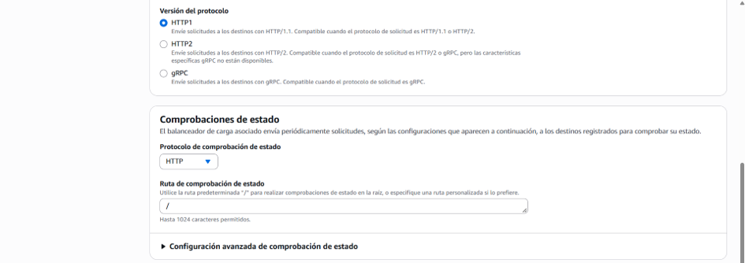
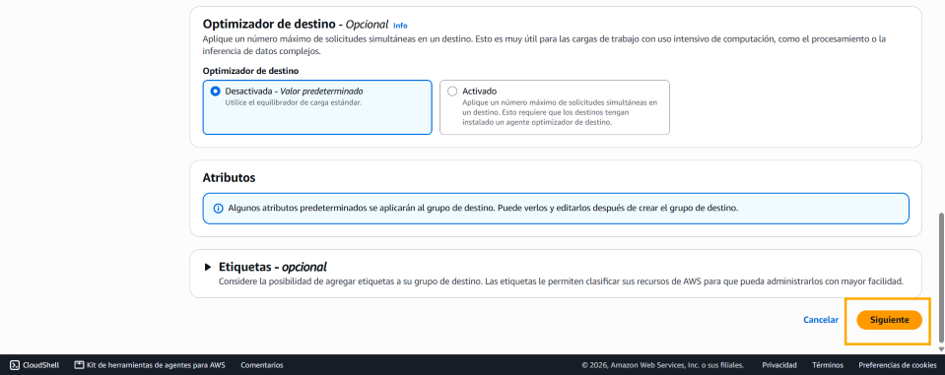
Omitimos el paso de Registrar destino tal y como indica el laboratorio. Esto significa que no agregaremos instancias al grupo de destino en este momento. Al omitir el registro de destino, el grupo de destino queda creado pero sin instancias asociadas. Esto nos permitirá asociar las instancias más adelante según sea necesario. Pulsamos directamente el botón siguiente.
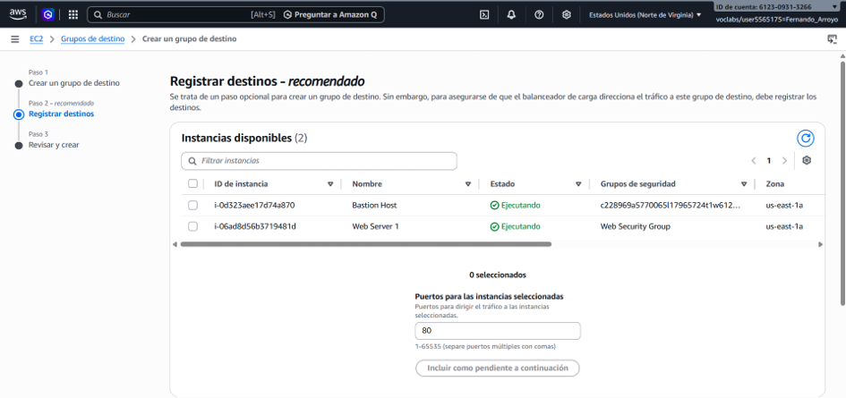
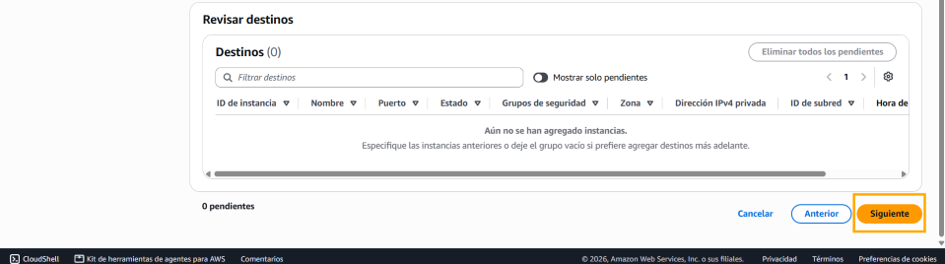
Revisamos la configuración y pulsamos en “Crear un grupo de destino”
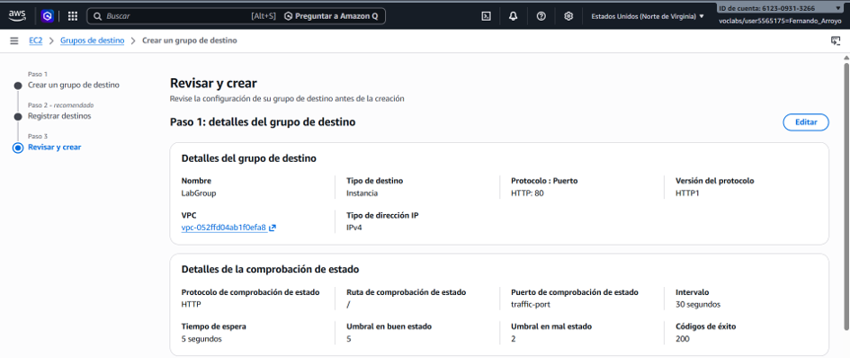
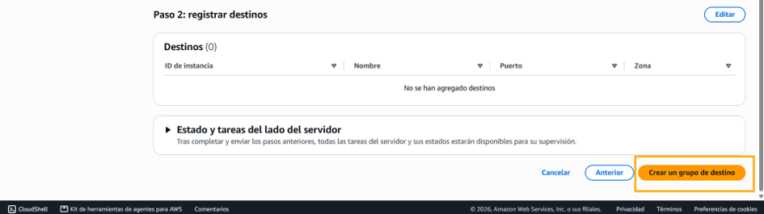
2.3.2 Creación del balanceador de carga
En esta sección, configuraremos el balanceador de carga que distribuirá el tráfico entre las instancias asociadas al grupo de destino previamente creado.
Desde el menú de la izquierda accedemos a Balanceadores de carga, desde donde crearemos el balanceador.
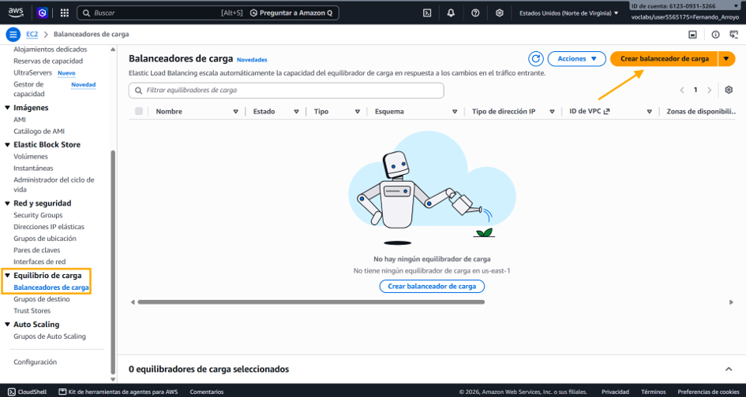
Seleccionamos el balanceador de carga para aplicaciones y pulsamos en "Crear".
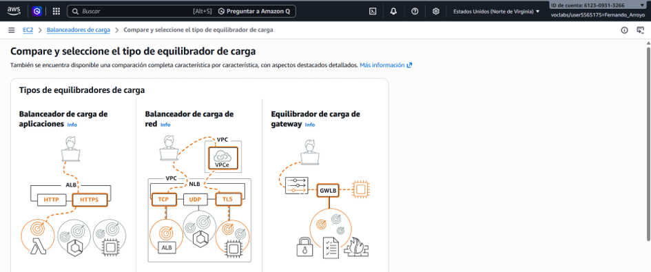
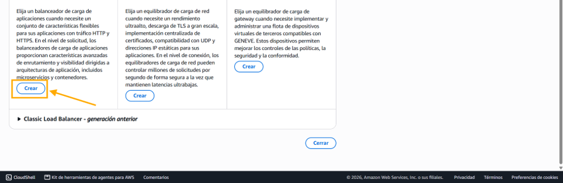
Introducimos los parámetros requeridos por el laboratorio.
Nombre del balanceador: LabELB
En mapero de red, para la VPC seleccionamos: LabVPC
Seleccionamos las subredes públicas correspondientes a la VPC LabVPC. Esto asegura que el balanceador de carga pueda recibir tráfico desde Internet.
Zona de disponibilidad 1 (us-east-1a): Public Subnet 1
Zona de disponibilidad 2 (us-east-1b): Public Subnet 2
Grupo de seguridad: Web Security Group
En agente de escucha, seleccionamos el protocolo HTTP y el puerto 80. Y en accion predeterminada, seleccionamos reenviar a los grupos de destino. Y seleccionamos LabGroup como grupo de destino.
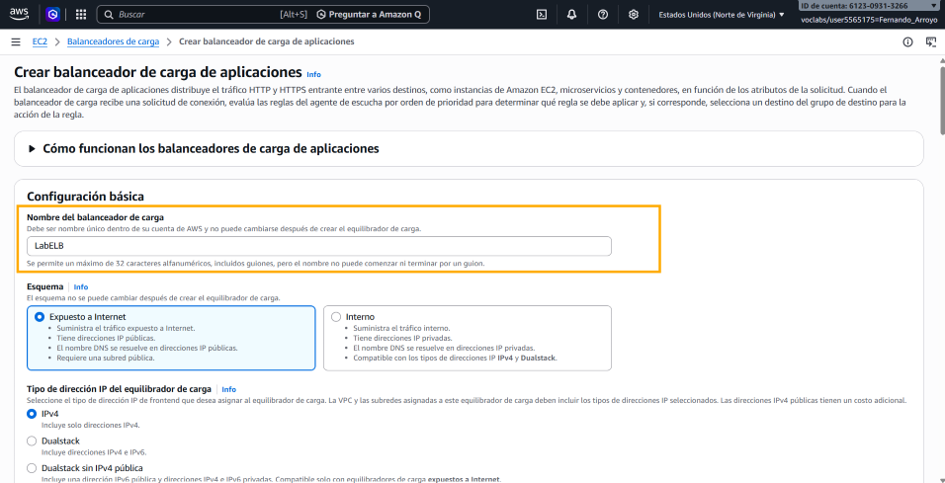
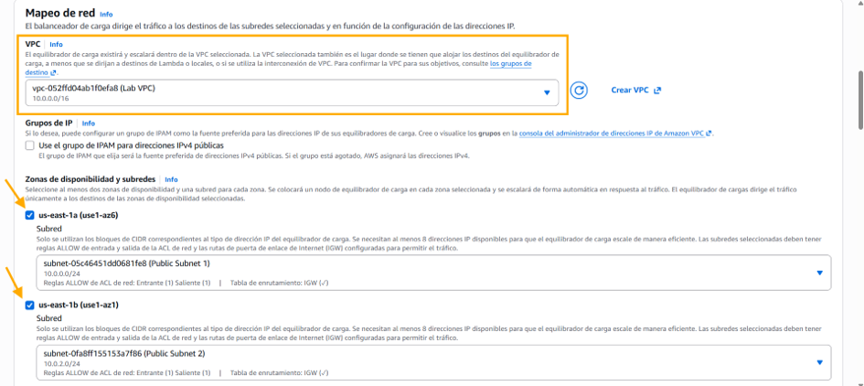
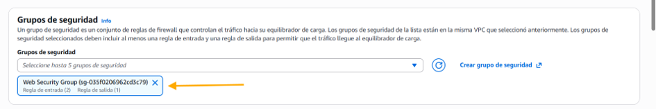
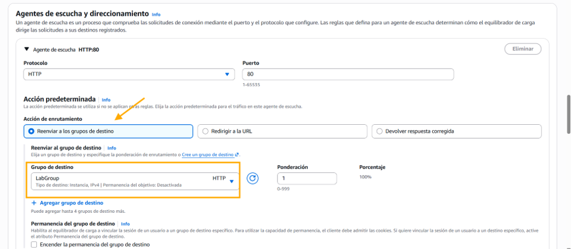
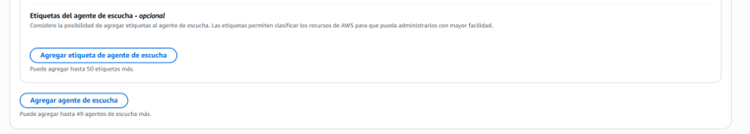
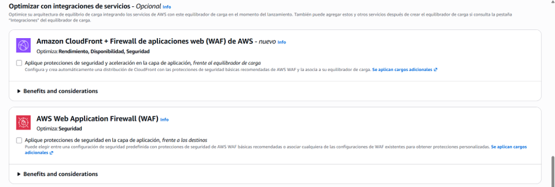
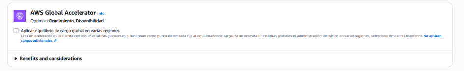
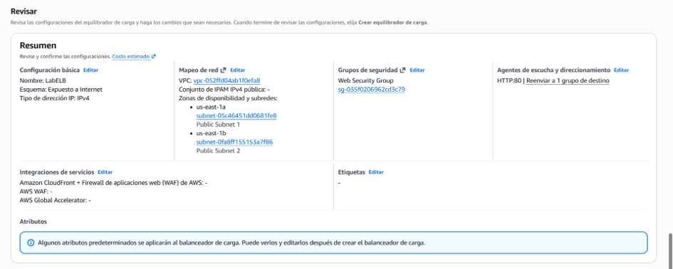
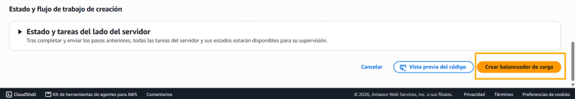
Una vez definidos los parámetros, procedemos a revisar la configuración final del balanceador de carga.
2.3.3 Resultado creación del balanceador de carga
Comprobamos el resultado de la creación del ELB. para ello entramos en el menu de balanceadores de carga y verificamos que el ELB creado aparezca en la lista.
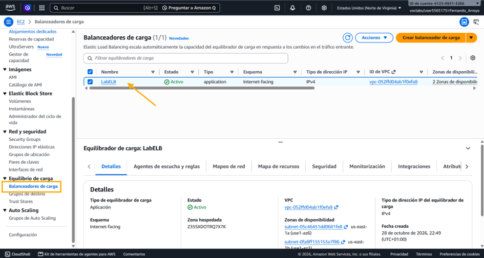
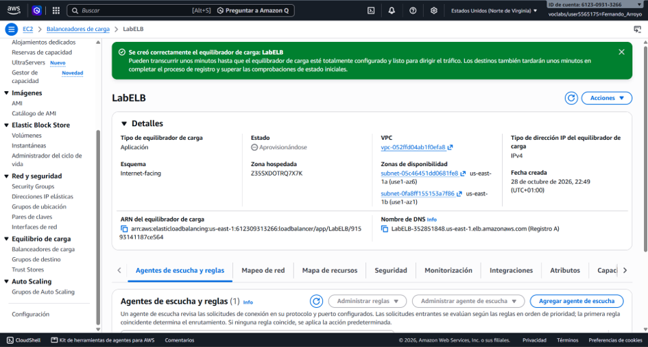
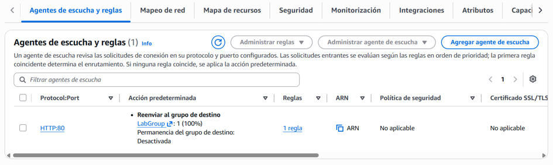
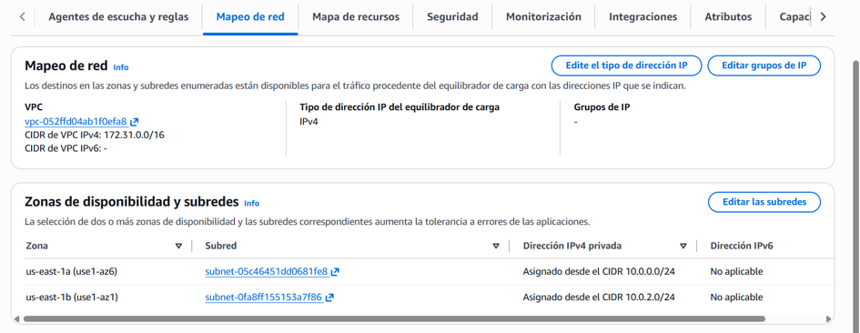
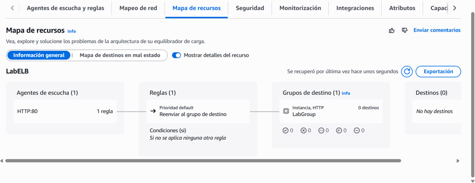